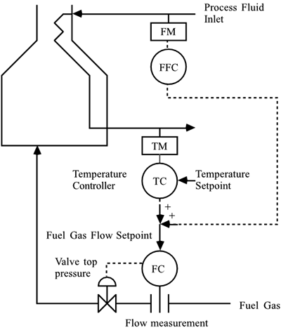

| 19 |
Consider the heater shown in Exercise 9. Now consider implementing feed-forward and cascade control when process flow disturbances can occur, as shown below. 
For a change in the inlet process flow rate of 1,000 Bbl/day, there is a change of –10°F in the outlet temperature. Also, the dynamic behavior can be described by a first-order lag of 5 minutes and a one minute time delay. Use the information from Exercise 9 to design a feed-forward/feedback/cascade-control strategy, and perform simulations for a step feed flow rate disturbance of 2,000 Bbl/day. |